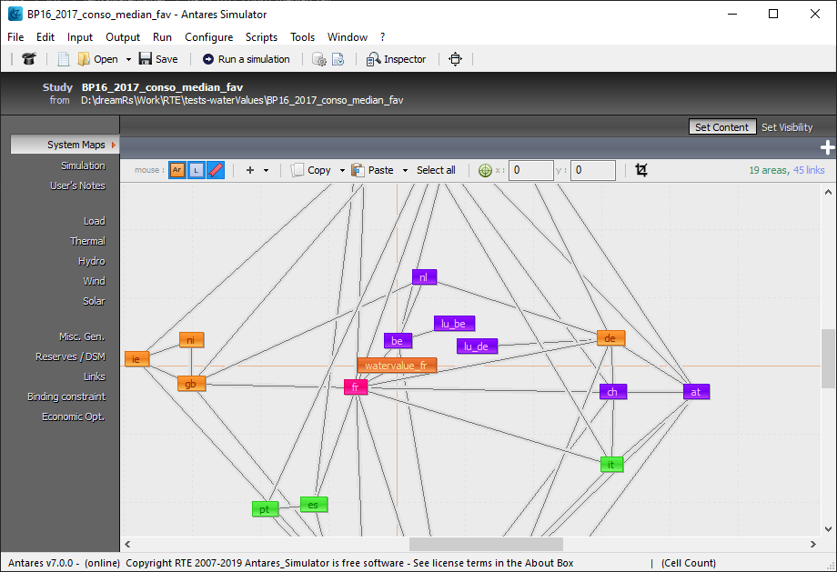
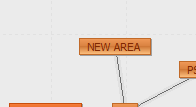
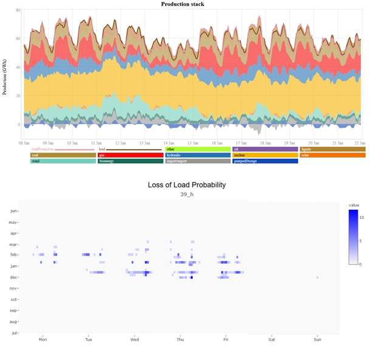
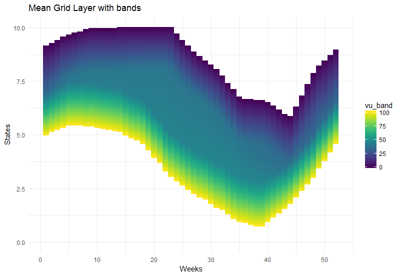
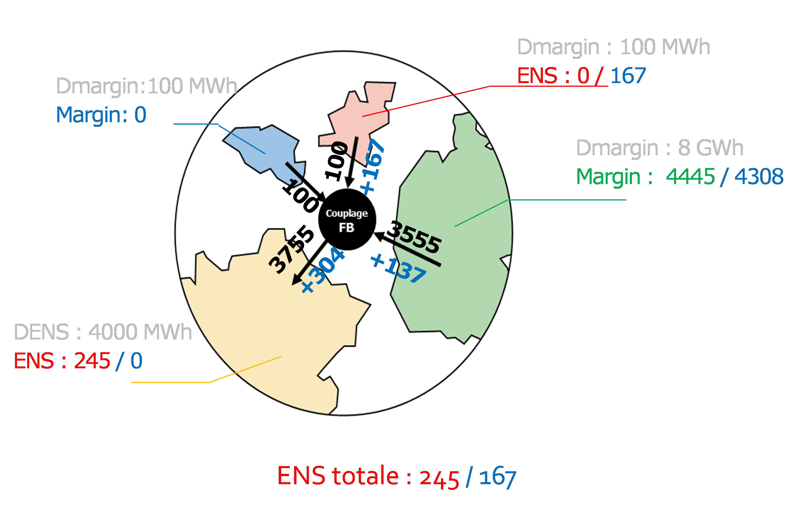

Antares R packages
 EN
EN
Find here the most popular R packages developed by Rte around Antares. You can edit a study, read simulation results and visualize them!

antaresRead
Import, manipulate and explore results generated by 'Antares', a powerful open source software developed by RTE (Réseau de Transport d’Électricité) to simulate and study electric power systems.

antaresEditObject
Edit an Antares study before running a simulation. Methods are provided to create (and remove) areas, links between them, thermal cluster and binding constraints.

antaresProcessing
Process results generated by Antares. Allows to create new columns like net load, load factors, upward and downward margins or to compute aggregated statistics like economic surpluses of consumers, producers and sectors.

antaresViz
Visualize results generated by Antares. This package provides functions that create interactive charts to help users visually explore the results of their simulations.

antaresWaterValues
Compute water values to use in Antares. This package allows to run specific simulations in Antares from within R, and to use the results of these simulations to compute Bellman values and water values for each stock level and each week of the year.

antaresAdequacyPatch
This package allows to post-process the results of an Antares simulation to apply the adequacy patch, which is the set of curtailment sharing rules implemented in the Euphemia market algorithm.
FR
Retouvez ici les packages R les plus populaires développés par Rte autour d’Antares. Vous pouvez éditer une étude, lire les résultats de simulations et les visualiser !
antaresEditObject
Modifier une étude Antares avant de lancer une simulation. Les méthodes fournies permettent notamment de créer et de supprimer les zones, les liens entre elles, les clusters thermiques et les contraintes couplantes.
antaresProcessing
Traiter les résultats Antares. Ce package permet notamment de créer des nouvelles colonnes telle que la charge nette, les facteurs de charge, les marges ascendantes et descendantes. Il facilite également le calcul de statistiques agrégées.
antaresViz
Visualiser les résultats générés par Antares. Les fonctions fournies permettent de créer des graphiques interactifs qui permettent d'explorer les résultats des simulations.
antaresWaterValues
Calculer les valeurs de l'eau à utiliser dans Antares. Ce package permet de lancer des simulations spécifiques dans Antares depuis R, et, à partir des résultats, de calculer les valeurs de Bellman et valeurs de l'eau pour chaque niveau de stock et chaque semaine.
fbClust
Ce package permet d'analyser une base de données de domaines Flow-Based, de les clusteriser et d'extraire les domaines les plus représentatifs pour les utiliser dans des études Antares, ainsi que des matrices de proabailité pour allouer ces domaines à des études prospectives.
fbAntares
Ce package permet d'ajouter des domaines Flow-Based dans Antares en tant que contraintes couplantes. Il fournit aussi une méthode pour réduire la complexité des domaines, et des fonctions de visualisation.
antaresAdequacyPatch
Ce package permet de post-traiter les résultats d'une simulation Antares pour y appliquer l'adequacy patch, qui est l'ensemble des règles de partage de la défaillance implémenté dans l'algorithme marché Euphemia.